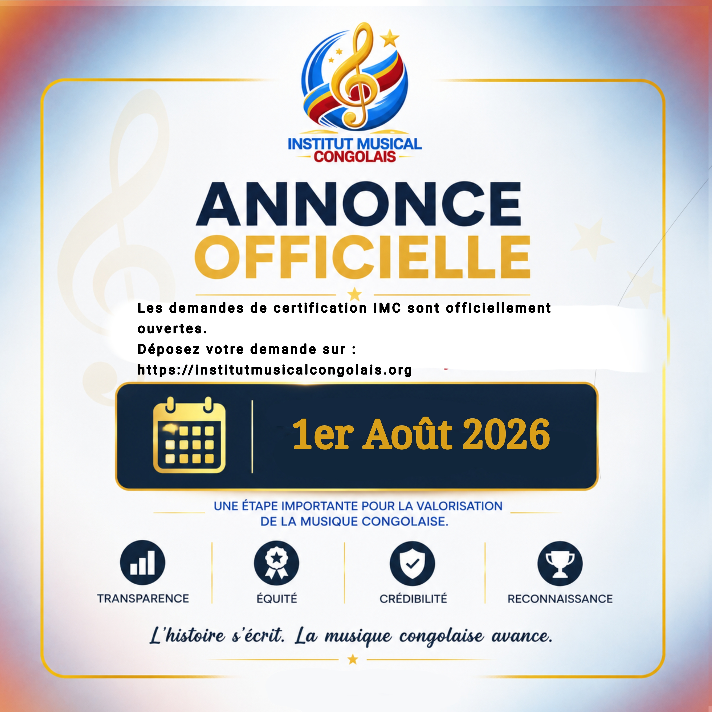

Retrouvez toutes les informations officielles de l’Institut Musical Congolais.
Dernière actualité

Les demandes de certification IMC sont officiellement ouvertes.
À partir d'aujourd'hui, les artistes, producteurs et labels peuvent soumettre leurs œuvres afin d'obtenir une certification officielle basée sur leurs performances réalisées en République Démocratique du Congo.
Les communiqués officiels, annonces et informations publiées sur cette page sont validés par l’Institut Musical Congolais.